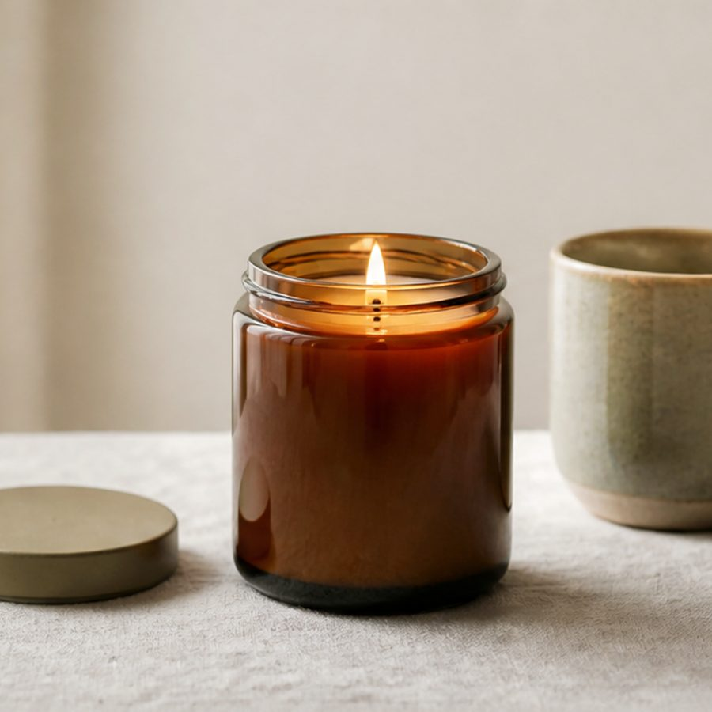

Still Morning
$28Bergamot, white tea, and cedar. A clean, quiet scent for the first hour of the day.
Full details, the six questions
- What it isHand-poured container candle in an amber glass jar with a lid.
- Made fromCoconut-soy wax blend, cotton wick, phthalate-free fragrance oil (bergamot, white tea, cedar).
- Size8 oz net weight. Jar is 3.2 in tall and 2.9 in wide. About 45 hours of burn time.
- Use and careTrim the wick to a quarter inch before each burn. Burn 2 to 4 hours at a time until the melt pool reaches the edge. Stop at half an inch of wax.
- ShipsShips in 2-4 business days with tracking. Gift sets ship in a padded box.
- If there's a problemArrived damaged or not as described? Message us within 14 days and we replace, repair, or refund. Wrong bracelet size? We resize free.
This wick-and-wax combination was burn-tested in this jar before sale. Always burn within sight. Candle safety.